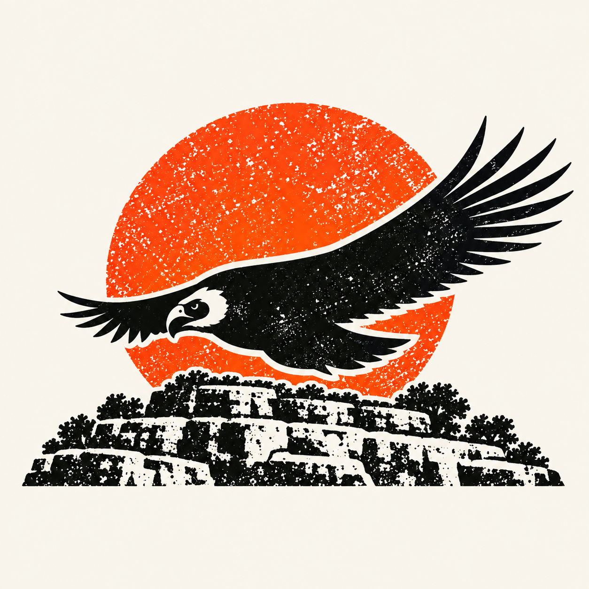
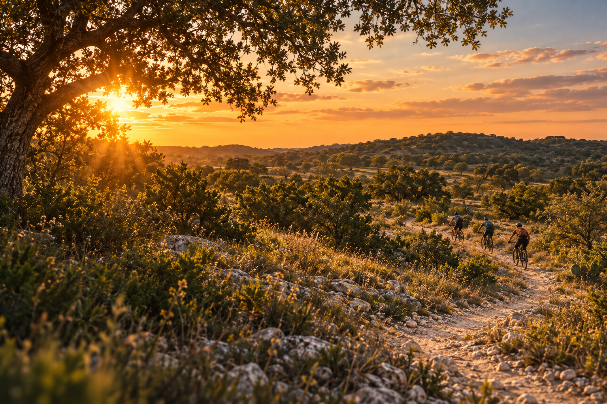
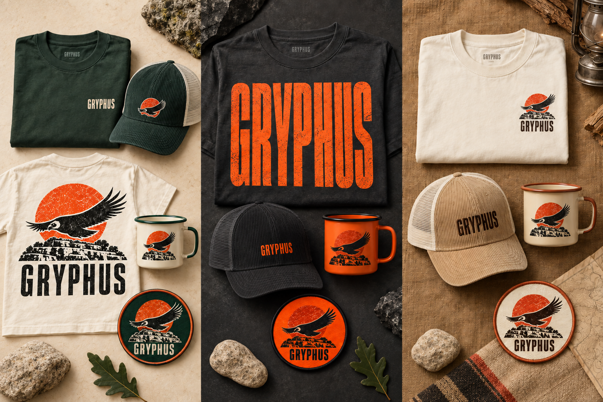

GRYPHUS / VISUAL DIRECTION
2027 · COMFORT, TEXAS

GRYPHUS
MUSIC + OUTDOOR FESTIVAL
2027COMFORT, TEXAS

MUSIC. PEOPLE. TRAILS.
RIDE THE HILLS.
HEAR THE MUSIC.
A gathering with room to move.
THE GRYPHUS EXPERIENCE
ELEVEN WAYS TO FIND YOUR PEOPLE.
MTB RACE
TRAIL RIDING
BIKE DEMOS
TRAIL RUNNING
CAMPING
FOOD + DRINK
FAMILY ADVENTURE
SKILLS CLINICS
OUTDOOR EXPO
RECOVERY + WELLNESS
11 EXPERIENCESONE
GRYPHUS.
GRYPHUS.
Come for your thing.
Find a little more.
TAKE IT WITH YOU
MERCHANDISE CONCEPT
FIND YOUR WAY
SIGNAGE CONCEPTMUSIC
TRAILS
CAMPING
THE FIELD KIT
COLOR + TYPESUN
#FF5125
#FF5125
INK
#171C18
#171C18
CREAM
#F7F3E9
#F7F3E9
FOREST
#183C30
#183C30
BIG SKY. BOLD TYPE.
Barlow Condensed Black / Switzer